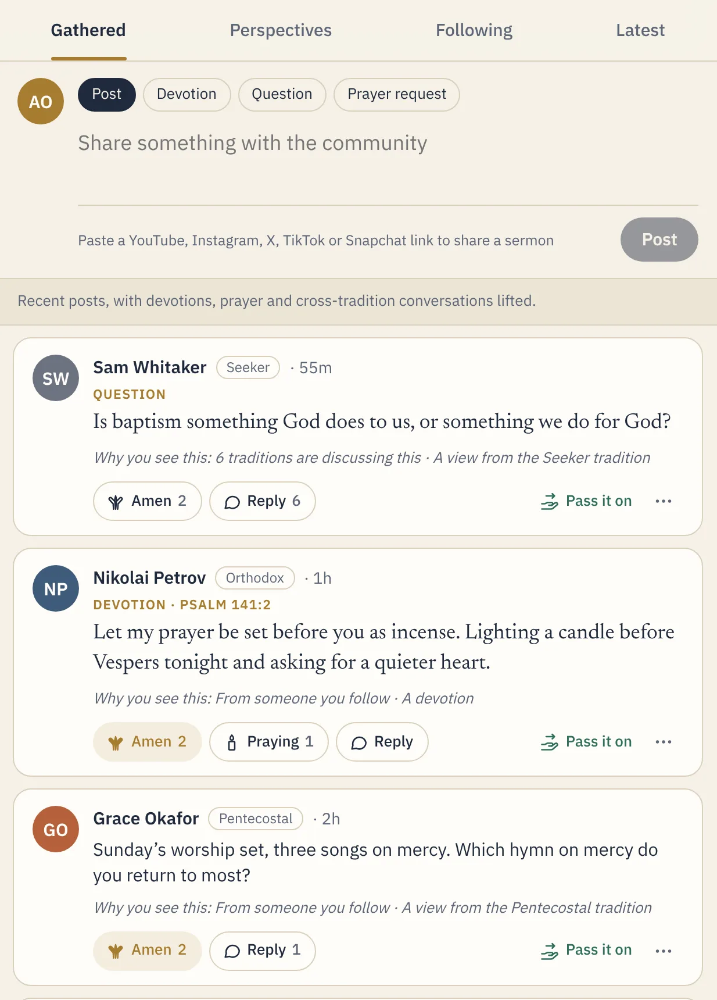
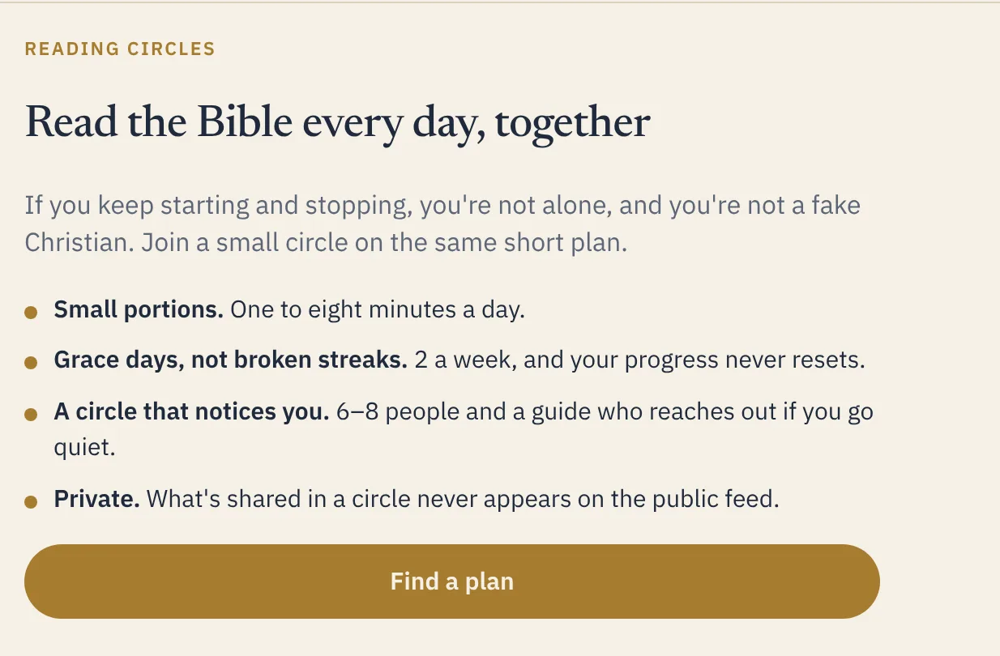

A feed that tells you why.
Share Scripture, sermons and honest questions, with no ads and no outrage.

The whole ranking fits here.
Nothing else decides what Gathered shows you. The formula lives in the open source code.
- recency
- 1 ÷ (1 + hours old ÷ 12)
- kind
- devotion 1.5, prayer 1.4, question 1.2, post 1
- conversation
- 1 + 0.25 for each tradition replying, up to 4
- follow
- 1.2 if you follow the author
- score
- all four, multiplied
Hear one tradition at a time.
Replies are labelled agree, adding nuance, respectfully differ or question. Filter to hear one voice.
Sam, a seeker, asks
Is baptism something God does to us, or something we do for God?
Maria Catholic, adding nuance
A sacrament: grace is truly given through the water and the Word.
Nikolai Orthodox, agree
Both. God acts, and we answer with a life of repentance.
Daniel Baptist, respectfully differ
In Acts, belief comes first and baptism is the public answer.
Kofi Reformed, adding nuance
A sign and seal of God’s promise, given to households.
A sample conversation from the app.

Read daily with six to eight others.
Two grace days a week, and your progress never resets. A guide notices if you go quiet.
| Gospel of John | 21 days |
| Psalms for hard days | 30 days |
| Romans | 16 days |
| One verse a day | 14 days |
What Selah will not do.
Sell your attention
No ads and nothing paid to be on the page.
Load sermons uninvited
YouTube, Instagram and TikTok links play only after you tap.
Tolerate mockery
Abuse is reported and removed. Differences of belief are not.
Keep where you were
Photos are resized on your device and stripped of location first.
Before you join
Is Selah only for Christians?
It is a Christian space, and honest seekers and guests are welcome. You choose how you identify when you join.
What does it cost?
Nothing. Any future plans will be explained openly before they affect you.
How do I start?
Create an account, choose your tradition, then share your first devotion: a verse and what it says to you.
Begin with a verse.
Your first post is a devotion. It sets the tone for everyone.
By signing up you agree to the terms and privacy policy.